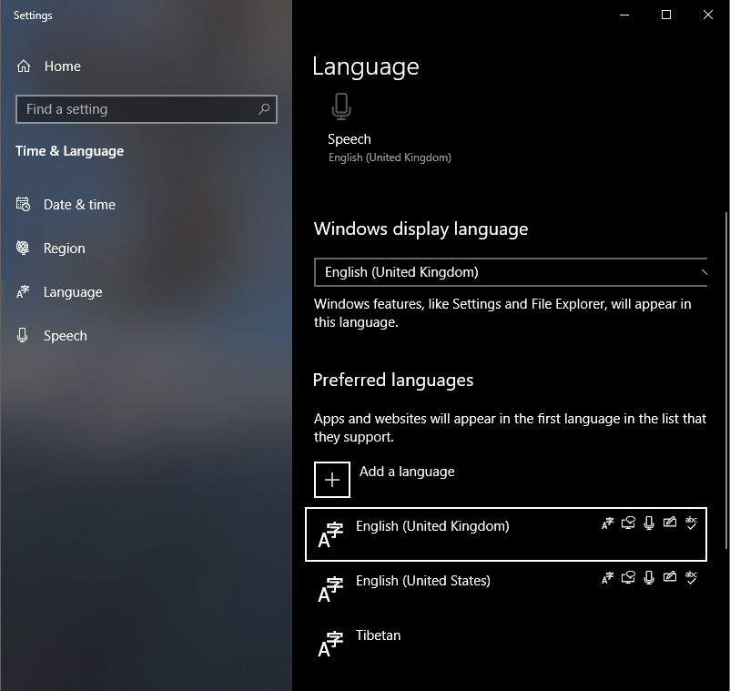

Tibetan keyboards for Windows#
Overview#
There are several options to type Tibetan on Windows
Windows’ built-in Tibetan input method
Tibetan (PRC)
General overview
For different keyboards and their support on different platform see: Tibetan keyboards
Windows Tibetan input method Tibetan (PRC)#

{kind=link}
Tibetan (PRC) can be installed via Windows settings. Simply add a keyboard Tibetan. Note that Tibetan (PRC) is not Wylie compliant, see below for alternatives.
Extended Wylie-Keyboard: TISE#
TISE (pronounced ‘tee-say’) is a Tibetan input utility for Windows XP, Vista, 7, 8, and 10.
TISE is a free Wylie input method that runs on XP, Vista and Windows 7 (32 and 64 bit (since version 2.0)). You can download the software from:
http://tise.mokhin.org/ (version 2.0, Nov. 2012, supports both 32 and 64 bit)
A short introduction: Typing Tibetan with TISE[1]#

Start the TISE program: you will see a Mount-Kailash icon on the right side of Windows task-bar.
TISE can be switched on and off with <shift><space>, or by clicking on the Mount-Kailash icon on the right side of Windows task-bar. Note that the sun in the icon indicates the activity-state of TISE.
Make sure to familiarize yourself with EWTS (extended Wylie) using Teaching EWTS by Alexandru Anton-Luca.
Note: TISE seems to be incompatible with some applications, if TISE doesn’t work in your application, the recommended input method would be Denjong. Alternatively, if you want to use TISE with GoldenDict, you can type the search-phrase in some other program (e.g. notepad) and then copy&paste the search term into GoldenDict.
Basic letters#
All basic Tibetan and Tibetan Sanskrit represented by EWTS scheme are supported by Tise. Often typing the final
aas inkaཀ is not necessary,kfollowed by a tsheg<space>is enough.Longer vowels (with a subjoined small letter achung) are typed as
aaཨཱ,iiཨཱི,uuཨཱུ,eeཨཱེ,ooཨཱོ, orAཨཱ,Iཨཱི,Uཨཱུ,Eཨཱེ,Oཨཱོ.Retroflex i ྀ is typed as
-i, and retroflex i with achung as-Iཱྀ, e.g.k-iཀྀ,k-Iཀཱྀ.auཨཽ,aiཨཻ are implemented.
Tibetan punctuation#
As per EWTS, asterisk
*types non-breaking tsheg (0x0f0c)་.Typing
_(underscore) gives 0xa0 (non-breaking space).Regular space (0x20) is typed by
xkey.
Tibetan Sanskrit letters#
As per EWTS, they are usually typed as capital letter (with Shift key pressed). Implemented are the following Tibetan Sanskrit letters:
Taཊ,Thaཋ,Daཌ,Naཎ,Shaཥ (the latter can be type asS)R+ཪ,+Wྺ,+Yྻ,+Rྼ, (fixed form ra, wa, ya, e.g. ཪྟ་ རྻ་ མྺ་ ཡྼ་)Hཿ,Mཾ,&྅,?྄.For the sake of simplicity, EWTS
~Mand~Mare typed asqྃ andQྂ respectively.
Complex stacks#
This is the major improvement of EWTS compared to previous approaches, and Tise fully takes advantage of this. In Tise stacks are typed using + symbol to stack glyphs vertically. If vertical stack is not what is desired, it is possible to quit vertical stacking mode by typing . (or just type a vowel or a tsheg if the syllable is complete).
Examples#
gyaགྱ is stacked, butg.yaགཡ isn’t.to type siddhi use:
si.ddhiorsid+d+hi. In many cases, as with all standard Wylie EWTS sequences likebrdzaབརྫ, for example, typing extra+sign is not required, Tise tries to be user friendly by minimizing the number of key hits needed for typing.More examples:
hUqཧཱུྃ་,hUQཧཱུྂ,d+hIHདྷཱིཿ,oMAHhUQཨོཾ་ཨཱཿཧཱུྂ.
Extended Wylie keyboard: Denjong Tib-Type#
Denjong Tib-Type is a free Tibetan Unicode typing system based on Wylie that works on all Windows platforms including 32 & 64 bits versions. The website and a more detailed documentation are on elaboration but you can, by now, download and install the product from:
https://github.com/thubtenrigzin/DenjongTibType/ - For AZERTY and QWERTY, Wylie and Sambhota transcription.
Note: use versions > 1.0 for international keyboard support.